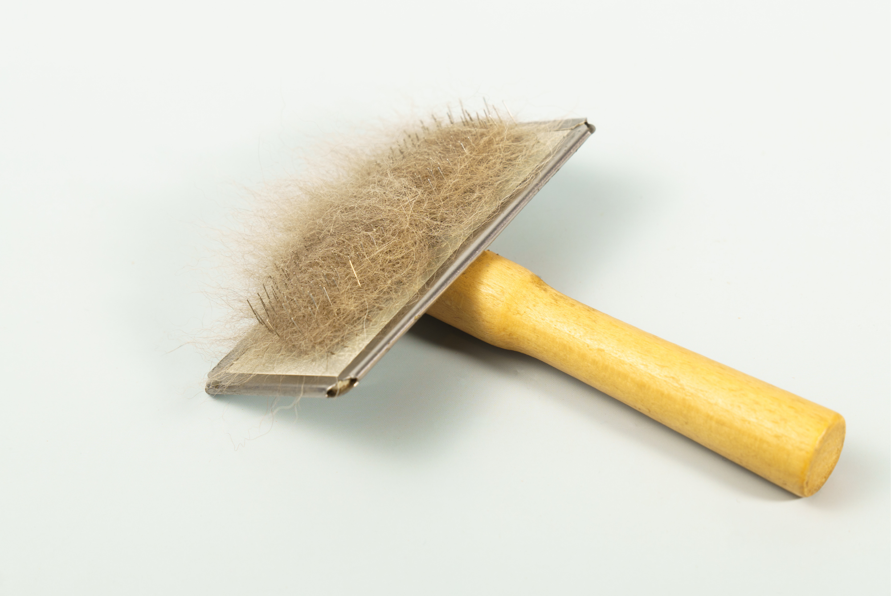

You vacuum the couch.
You lint-roll the furniture.
You sweep the floors.
And five minutes later, there's another layer of pet hair.
If you have a cat or dog, cleaning up after shedding can feel endless.
But there's something important to know before you spend another hour chasing fur around the house:
Pet hair isn't the same thing as the allergen that can trigger your symptoms.
Hair is simply the part you can see.
Dander and allergen-containing particles can be much harder to spot—and they're often hiding in the places you don't think to clean.
Here's what the difference means for your cleaning routine.
Pet Hair: The Mess You Can See

Pet hair is usually the most obvious sign that your pet has been spending time in a room.
It's on your:
- Couch
- Clothes
- Rugs
- Floors
- Bedding
- Car seats
And while pet hair can be annoying to clean, it's not necessarily the thing causing an allergic reaction.
Hair can, however, carry allergen-containing material.
For example, cats spread allergenic proteins onto their coats while grooming. When those hairs shed, the material can travel with them.
So picking up pet hair is still worthwhile.
It's just not the entire cleaning job.
Dander: The Mess You Can't Always See
Dander consists of tiny flakes of dead skin shed by animals.
Unlike a strand of fur, dander can be difficult to see.
It can also mix with household dust and settle into soft surfaces around your home.
That means you could vacuum up all the visible hair from your couch and still have allergen-containing particles left behind.
This is why homes with pets require more than a "remove the fur" strategy.
Allergens: What You're Really Trying to Reduce
Allergens are proteins that can trigger an allergic response in sensitive people.
Cats, for example, produce Fel d 1, a major cat allergen. Dogs produce several allergenic proteins associated with substances such as saliva, dander, urine, and skin secretions.
These proteins can end up on hair and dander and then spread throughout the home.
They can settle into furniture, bedding, rugs, clothing, and household dust.
And unlike pet hair, you can't simply look around a room and know where all of them are.
Why a Clean-Looking Home Can Still Have Allergens
This is probably the biggest misconception about cleaning for pet allergies.
A room can look spotless while still containing allergen-containing material.
Think about a couch.
You might remove every visible piece of fur.
But the cushions can still contain dust and microscopic particles.
The same goes for a bedroom.
Fresh sheets may look clean, but allergens can also be present on blankets, pillows, mattresses, rugs, curtains, and other surfaces.
Visible cleanliness doesn't always equal low allergen exposure.
That doesn't mean you need to deep-clean your entire home every day.
It means you should be strategic about where you clean.
Start With the Soft Surfaces
If you're trying to reduce pet allergens at home, soft surfaces deserve attention.
Couches and upholstered chairs
These are often favorite pet hangouts.
Vacuum them regularly, paying attention to cushions, seams, and underneath removable cushions.
Bedding
If your pet spends time on your bed, wash sheets, pillowcases, blankets, and other washable bedding regularly.
Don't forget the area around the bed, either.
Rugs and carpets
These can collect hair, dander, dust, and other particles.
Regular vacuuming can help remove accumulated material.
Pet beds
Your pet's bed can be one of the most concentrated sources of hair and dander in the home.
If the cover is washable, clean it regularly according to the manufacturer's instructions.
Don't Just Move the Dust Around
How you clean matters.
Dry dusting can send settled particles back into the air instead of actually removing them.
Similarly, vacuuming with equipment that doesn't effectively capture fine particles can disturb dust and allergen-containing material.
For allergy-sensitive households, the goal is simple:
Capture the particles rather than redistribute them.
Use cleaning methods appropriate for the surface, and follow the manufacturer's instructions for vacuum filters and washable components.
Your Bedroom Deserves Extra Attention
If you experience allergy symptoms at night, don't overlook the bedroom.
You spend several uninterrupted hours there, which means even moderate allergen accumulation can become prolonged exposure.
Focus on:
- Bedding
- Rugs
- Curtains
- Upholstered furniture
- Dust around the bed
- Pet beds
- Floors
Keeping pets out of the bedroom can also reduce the amount of allergen that accumulates where you sleep.
It doesn't have to mean keeping your pet away from you all day.
Creating one lower-allergen area can be a more realistic starting point.
What About Air Purifiers?
Air filtration can be useful for airborne particles, but it shouldn't replace surface cleaning.
Pet allergens don't exist only in the air.
They can settle onto furniture, flooring, bedding, and other surfaces.
That's why a good home strategy usually involves both:
reducing airborne particles + removing settled allergens.
Think of an air purifier as one part of the system—not a substitute for cleaning.
A Simple Pet-Allergy Cleaning Routine
You don't need to turn your home into a laboratory.
Instead, focus on consistency.
Daily or frequent
- Pick up visible pet hair from high-use areas
- Clean obvious pet messes
- Wash your hands after handling your pet if you're allergy-sensitive
Weekly
- Vacuum floors and rugs
- Vacuum upholstered furniture
- Wash pet bedding as appropriate
- Wash sheets and other frequently used bedding
- Dust surfaces using a method that captures rather than redistributes dust
Regularly
- Clean curtains and other washable fabrics as appropriate
- Check vacuum filters
- Clean air purifier filters according to manufacturer instructions
- Pay attention to areas where your pet spends the most time
The exact schedule will depend on your home, your pet, and your allergy sensitivity.
The goal isn't perfection.
It's preventing allergens from continuously building up.
Don't Forget the Source
There's another reason cleaning alone can feel frustrating.
Your pet is still producing allergenic proteins.
You can clean the couch today, but your cat or dog can bring more allergen-containing material into the environment tomorrow.
That's why successful allergen management isn't just about cleaning harder.
It's about combining source management with environmental cleaning.
That might include regular grooming, washing pet bedding, managing where pets spend time, improving ventilation or filtration, and keeping high-contact surfaces cleaner.
The Bottom Line
When you live with a pet, it's tempting to judge your cleaning success by how much hair you can see.
But pet hair is only part of the picture.
Hair is visible. Dander is harder to see. Allergens are microscopic proteins that can settle throughout your home.
So if allergies are part of your household, don't just clean what looks dirty.
Pay attention to the places where allergen-containing material can accumulate: couches, carpets, bedding, pet beds, clothing, and household dust.
The goal isn't to eliminate every trace of your pet from the house.
It's to keep allergen buildup under control—especially in the spaces where you spend the most time.